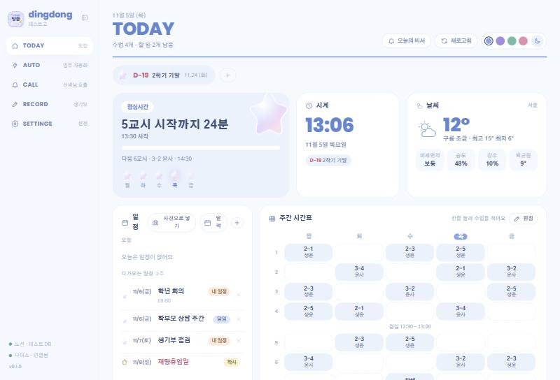
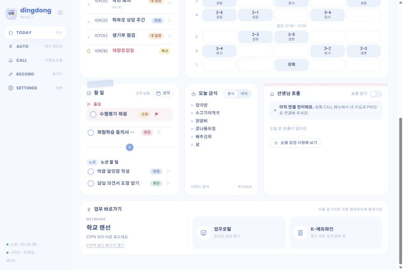
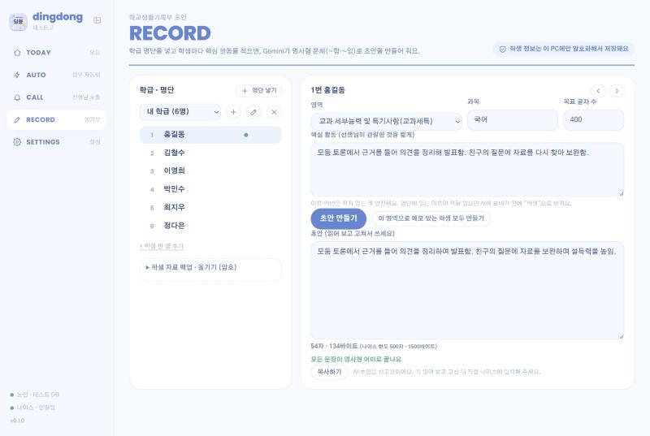

지금 이 시간
지금이 몇 교시인지, 몇 분 남았는지, 다음 수업은 무엇인지 한눈에. 켜면 오늘의 비서가 할 일·수업·급식을 먼저 알려 줘요.
시간표, 급식, 학사일정, 할 일, 선생님 호출까지. 컴퓨터를 켜면 바탕화면에서 지금 이 시간과 오늘 할 일을 바로 보여 드려요.

필요한 것만 켜고, 쓰지 않는 카드는 끄고, 순서도 마음대로 바꿀 수 있어요.
지금이 몇 교시인지, 몇 분 남았는지, 다음 수업은 무엇인지 한눈에. 켜면 오늘의 비서가 할 일·수업·급식을 먼저 알려 줘요.
컴시간에서 내 이름을 고르면 주간 시간표가 채워져요. 직접 고치고 교시 시간도 학교에 맞게 바꿀 수 있어요.
학교를 고르면 나이스의 급식과 학사일정이, 동네를 고르면 날씨와 미세먼지가 바로 나와요.
할 일에 중요 표시를 하고 달력에서 날짜를 끌어 옮겨요. 노션을 연결하면 딩동에서 적은 할 일이 노션에도 만들어져요.
교무실 앞 태블릿에서 학생이 부르면 이 컴퓨터에 알림과 소리로 알려 드려요. 창을 닫아 두어도 받아요.
학급 명단을 넣고 학생별 핵심 활동을 적으면 명사형 문체(~함·~임)의 초안을 만들어 줘요. 학생 정보는 이 PC에만 저장돼요.
파스텔 다이어리 느낌의 화면에서 색 테마 4가지와 어두운 화면도 고를 수 있어요.


관리자 권한이 필요 없고, 설치가 끝나면 바탕화면에 바로가기가 생겨요.
위의 딩동 최신 버전 다운로드 버튼을 눌러 파일을 받아요.
받은 파일을 두 번 누르면 설치가 시작되고, 끝나면 딩동이 저절로 열려요.
설정에서 학교와 날씨 지역을 고르면 급식·학사일정·날씨가 채워져요.
처음 실행할 때 "Windows의 PC 보호" 화면이 나오면 추가 정보 → 실행을 눌러 주세요. 코드 서명이 없는 앱이라 나오는 안내예요.
앱을 켜고 왼쪽 메뉴의 SETTINGS(설정)에서 해요. 필요한 것만 하셔도 되고, 하나씩 눌러서 따라 해 보세요.
설정의 학교 카드에서 학교 이름(예: 한국고)을 검색해 고르면 급식과 학사일정이 채워져요. 담임반이 있으면 적어 두세요. 나이스 인증키는 없어도 되지만, 있으면 불러올 수 있는 양이 늘어요. open.neis.go.kr에서 무료로 받을 수 있어요.
날씨 지역 카드에서 동네 이름(예: 서울)을 검색해 고르면 날씨와 미세먼지가 나와요.
컴시간 시간표 카드에서 학교를 찾고, 내 이름(가운데 글자는 *로 보여요)을 고른 뒤 시간표 가져오기를 누르면 주간 시간표가 채워져요. 컴시간에 없으면 홈의 주간 시간표 카드에서 편집을 눌러 직접 적고 완료를 눌러도 돼요. 학교 종 시간이 다르면 교시 시간 카드에서 바꿔요.
노션을 쓰는 선생님만 해요. (1) 노션에서 내 통합(내부 통합)을 만들어 연결 키를 복사해요. (2) 할 일·일정 데이터베이스 페이지의 오른쪽 위 ··· → 연결에서 그 통합을 추가해요. (3) 딩동 설정의 노션 연결 키와 데이터베이스 주소 칸에 붙여 넣어요. 연결하면 딩동에서 할 일을 추가할 때 노션에도 새 페이지가 만들어지고, 체크하면 노션에서도 완료로 바뀌어요.
사진으로 일정 읽기와 생기부 초안에 써요. aistudio.google.com/apikey 에서 무료 키를 만들어 사진 읽기 (Gemini) 카드의 Gemini API 키 칸에 넣어요. 키는 이 컴퓨터에만 암호화해서 저장돼요.
딩동콜은 학생이 태블릿으로 선생님을 부르는 서비스예요. 학교마다 관리자 선생님 한 분이 딩동콜(dingdongcall.web.app)에서 학교 등록하기를 하면 학교 코드 6자리가 생겨요. 딩동 왼쪽 메뉴 CALL에서 학교 코드를 넣고 학교 확인을 누른 뒤, 내 이름을 고르고 PIN 6자리를 넣어 연결해요(PIN은 딩동콜 관리자가 정해 줘요). 연결하면 학생이 부를 때 알림과 소리로 알려 줘요. 교무실 공용 컴퓨터라면 학교 코드를 확인한 뒤 위쪽의 교무실 공용 컴퓨터 버튼을 누르고, 딩동콜 관리자가 만든 공용 비밀번호를 넣어요. 그러면 모든 선생님의 호출을 알림과 소리(“○○ 선생님, 학생이 찾아왔어요”)로 알려 주고 확인 처리도 할 수 있어요. 쓰지 않으면 화면과 실행에서 "선생님 호출 기능 쓰기"를 꺼요.
내 데이터 · 백업 카드에서 저장 폴더 바꾸기로 D: 드라이브나 USB를 고르세요. 재부팅하면 초기화되는 학교 컴퓨터에서도 데이터가 남고, 초기화된 뒤 딩동을 다시 설치해도 D:의 폴더를 알아서 찾아요. 백업 파일로 내보내기도 가끔 해 두세요.
구글 연동 · 자동 백업 카드에서 구글에 연결을 누르면 브라우저에서 구글 로그인 화면이 열려요. 로그인하고 드라이브 항목을 모두 체크한 뒤 허용해 주세요. 연결하면 이 구글 계정에 저장된 설정이 있을 때 바로 불러올지 물어봐요(처음 쓰는 컴퓨터에서 편해요). 연결한 뒤 지금 올리기를 누르면 시간표·할 일·일정·설정이 내 구글 드라이브의 숨김 폴더에 저장돼요. 다른 컴퓨터에서는 같은 구글 계정으로 연결하고 구글에서 불러오기를 눌러요. 브라우저 창이 안 보이면 카드 안의 브라우저 다시 열기나 로그인 주소 복사를 눌러 주세요. 노션·Gemini·나이스 키는 연결 키도 함께 저장을 켜고 암호를 정하면 암호로 잠가서 같이 저장돼요. 새 컴퓨터에서는 구글에 연결하고 그 암호만 넣으면 노션까지 바로 이어져요. 호출 로그인(PIN)은 올라가지 않아요.
설정의 그룹 공유 일정 카드에서 그룹 만들기를 누르고 그룹 이름과 내 이름을 넣으면 그룹 코드(DD-로 시작)가 생겨요. 같은 그룹 선생님들은 코드로 참여에서 코드와 내 이름을 넣으면 돼요. 그룹 일정은 달력과 오늘 일정에 초록색으로 나오고, 일정을 추가할 때 "그룹: 이름"을 고르면 모두에게 보여요. 이름과 일정만 올라가고 학생 정보는 올라가지 않아요. 자기가 올린 일정만 고칠 수 있고, 그룹을 만든 선생님(관리자)은 모든 일정을 고칠 수 있어요.
폰 브라우저에서 https://ghaud21-art.github.io/dingdong/app/ 를 열어요(크롬이면 메뉴의 "홈 화면에 추가"를 하면 앱처럼 써요). 먼저 PC 딩동에서 구글에 연결하고 지금 올리기를 한 번 눌러 둬요. 그다음 폰에서 같은 구글 계정으로 연결하면 오늘 시간표·할 일·일정·급식·D-day가 보여요. 아래 달력에서 날짜를 누르면 그날의 할 일과 일정이 나오고(할 일이 있는 날은 파란 점, 일정이 있는 날은 주황 점), 항목을 누르면 날짜와 내용을 고칠 수 있어요. 할 일 체크·추가·지우기도 돼요. 노션 할 일은 체크만 할 수 있어요. 폰에서 고친 내용은 PC 딩동이 켜져 있을 때 2분 안팎에 PC에 반영돼요(PC가 꺼져 있으면 켤 때 반영). 학생 정보(생기부)는 폰에 올라오지 않아요.
왼쪽 메뉴의 RECORD에서 반을 만들고, 엑셀 파일이나 붙여넣기로 명단을 넣어요. 학생을 고르고 영역과 핵심 활동을 적은 뒤 초안을 만들면 ~함·~임으로 끝나는 문장으로 나와요(Gemini 키 필요). AI에는 명단의 학생 이름을 "학생"으로 바꿔서 보내고, 초안은 반드시 선생님이 확인하고 고쳐 쓰세요. 완성한 기록은 설정의 시트로 올리기로 구글 시트에 보관할 수 있어요. 학교와 교육청의 개인정보 지침을 먼저 확인해 주세요.
홈 화면 아래 즐겨찾기에는 업무포털이 기본으로 있고, 링크 추가로 자주 가는 사이트를 넣을 수 있어요(편집 버튼으로 지우기). 설정의 즐겨찾기 링크 칸에 한 줄에 하나씩 적어도 되고(이름과 주소를 띄어 쓰거나 주소만 적어도 돼요), 왼쪽 메뉴에도 같이 나타나요. 홈 화면 구성 카드에서 카드를 켜고 끄고 ▲▼로 순서를 바꿀 수 있어요. 오른쪽 위 색 동그라미로 테마를, 달 모양 버튼으로 어두운 화면을 골라요. 화면과 실행에서는 컴퓨터를 켜면 딩동 자동 실행, 바탕화면 위젯 모드, 하루 첫 실행 때 뜨는 오늘의 비서를 켜고 꺼요. Ctrl + 마우스 휠로 화면 크기도 바꿀 수 있어요.
학교마다 업무포털과 EVPN 주소가 다를 수 있어요. 업무포털 주소 카드에서 바꿔요. 비워 두면 기본 주소를 써요. 딩동은 랜선이면 업무포털을, 와이파이면 EVPN 접속 페이지를 먼저 열어 줘요(로그인은 직접 해요).
네, 무료예요. 다만 사진으로 일정 읽기나 생기부 초안 같은 AI 기능은 선생님이 직접 발급한 Google Gemini 키가 있어야 쓸 수 있어요.
시간표·할 일·일정·설정은 선생님의 컴퓨터에만 저장돼요. 재부팅하면 초기화되는 학교 PC라면 설정에서 저장 폴더를 D: 드라이브나 USB로 바꾸고, 백업 파일로 내보내 둘 수 있어요.
생기부 명단과 초안은 이 PC 안에서 암호화해서 저장하고, 설정 백업에는 넣지 않아요. AI 초안을 만들 때는 선생님이 적은 핵심 활동 글만 보내고, 명단에 있는 학생 이름은 "학생"으로 바꿔서 보내요. 처음 사용할 때 안내를 보여 드려요.
앱이 켜질 때와 6시간마다 새 버전을 확인해서 알아서 받아 둬요. 화면 위에 "지금 다시 시작"이 나오면 눌러 주세요.
아니요. 인증서 암호와 EVPN 비밀번호는 딩동이 저장하지도, 대신 입력하지도 않아요. 딩동은 랜선인지 와이파이인지 확인해서 알맞은 로그인 페이지를 열어 주는 데까지만 도와요.
Windows 설정의 앱 목록에서 "딩동"을 지우면 돼요. 저장된 데이터 폴더는 따로 남아 있으니, 완전히 지우려면 그 폴더도 지워 주세요.